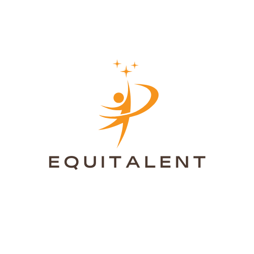

Werving / Talentsystemen
Equitalent
Wervingssystemen zijn ontworpen om talent efficiënt te vinden. Maar efficiëntie heeft een prijs: kandidaten die niet aan verwachte patronen voldoen worden uitgefilterd, zelfs als ze zouden uitblinken in de rol.
Equitalent herdenkt selectieprocessen om talent te herkennen dat niet in het standaard plaatje past. Het focust sterk op inclusie, neurodivergente mensen en mensen met een beperking.
Schrijf je in op de wachtlijst (opent in nieuw tabblad) →